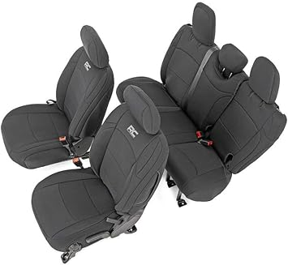

← jlseatcover.com
Finding the Best Jlseatcover Without Overpaying
May 2026
The jlseatcover market in 2026 looks nothing like it did a year ago. New brands, better tech, and more competitive pricing across the board.
Practical Advice
- The Q&A section on jlseatcover listings often answers questions that no review covers.
- Check "Frequently Bought Together" — it shows what extras you might need for your jlseatcover.
Buyer Traps to Watch For
Ignoring the fine print — Some jlseatcover listings look great until you realize key parts are sold separately.
Skipping negative reviews — A 4.5-star product with durability complaints tells you more than a 5-star product with 8 reviews.
Going with the cheapest option — Budget jlseatcover cut corners. Spending 20% more often gets something that lasts 3x longer.
Key Features Worth Paying For
- Value ratio — Mid-range jlseatcover usually deliver 90% of premium performance at half the cost.
- Availability — In-stock with fast shipping beats a "better" product backordered for weeks.
- Return policy — Easy returns mean lower risk. Even well-reviewed jlseatcover might not suit your situation.
Worth Your Money



What It Comes Down To
The best jlseatcover is the one that fits your needs and budget. Our detailed comparisons on jlseatcover.com make that call easier.
Affiliate Disclosure: As an Amazon Associate, we earn from qualifying purchases. This doesn't affect our recommendations.